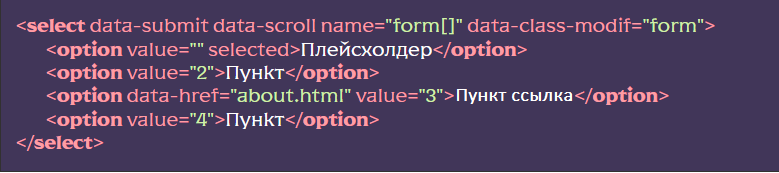

Подключение модуля
[HTML] В нужном месте вызвать сниппет sel, отредактировать HTML-код селекта под свои нужды
[SCSS] Раскомментировать строку @import “select”; в файле
src/scss/base/forms/forms.scss – это подключит базовые стили селекта, отредактировать под свои
нужды
[JS] Раскомментировать строку import ‘./libs/select.js’ в файле
js/app.js
Настройки и функционал модуля
Для подключения того или иного функционала модуля используются различные HTML-атрибуты Атрибуты:
Атрибуты для тега <SELECT>:
- multiple – мультивыбор
- disabled – недоступен
- data-class-modif=имя класса – модификатор к конкретному селектору. В результате получится select select_имя класса
- data-tags – режим тегов (только для multiple), позволяет вставлять выбранные значения в виде тегов с крестиком для удаления. Также есть возможность выводить эти теги в любом указанном месте, указав селектор блока в качестве значения атрибута
- data-scroll – включит прокрутку для выпадающего списка, дополнительно можно подключить кастомный скролл simplebar в js/app.js. Указанное число для атрибута ограничит высоту контейнера выпадающего списка
- data-checkbox(в работе) – стилизация элементов по checkbox (только для multiple)
- data-show-selected – отключает скрытие выбранного элемента
- data-search – позволяет искать по выпадающему списку
- data-speed – позволяет указать скорость открытия/закрытия списка в миллисекундах, по умолчанию 150
- data-open – селект открыт сразу
- data-submit – отправляет форму при изменении селекта
- data-pseudo-label=заголовок – добавляет псевдоэлемент к заголовку селекта с указанным текстом, а также класс _select-pseudo-label
Атрибуты для тега <OPTION>:
- data-class=имя класса – добавляет класс
- data-asset=путь к картинке или текст – добавляет в элемент списка структуру двух колонок с указанными данными
- data-href=адрес ссылки –добавляет ссылку в элемент списка
- data-href-blank – откроет ссылку в новом окне
Атрибуты для для плейсхолдера (плейсхолдер - это <OPTION> с пустым value)
- data-label – добавляет label к селекту
- data-show – показывает плейсхолдер в списке (только для единичного выбора)
Атрибуты для прочих элементов
- data-one-select - селекты внутри объекта с этим атрибутом будут открываться только по одному. То есть при открытии селекта другой открытый селект закрывается.
Пример селекта с некоторыми атрибутами
Классы которые формируются модулем
- select – Главный блок
- select__body – Тело селекта
- select__title – Заголовок
- select__value – Значение в заголовке
- select__label – Лейбл
- select__input – Поле ввода
- select__text – Оболочка текстовых данных
- select__link – Ссылка в элементе
- select__options – Выпадающий список
- select__scroll – Оболочка при скролле
- select__option – Пункт
- select__content – Оболочка контента в заголовке
- select__row – Ряд
- select__asset – Дополнительные данные
- _select-disabled – Запрещен
- _select-tag – Класс тега
- _select-open – Список открыт
- _select-active – Список выбран
- _select-focus – Список в фокусе
- _select-multiple – Мультивыбор
- _select-checkbox – Стиль чекбокса
- _select-selected – Выбранный пункт
- _select-pseudo-label – Псевдолейбл для заголовка селекта
События
После каждого выбора элементы селекта срабатывает событие selectCallback, его можно отловить в любой части кода:

Расположение и дополнительные данные
Класс SelectConstructor находится в файле js/libs/select.js